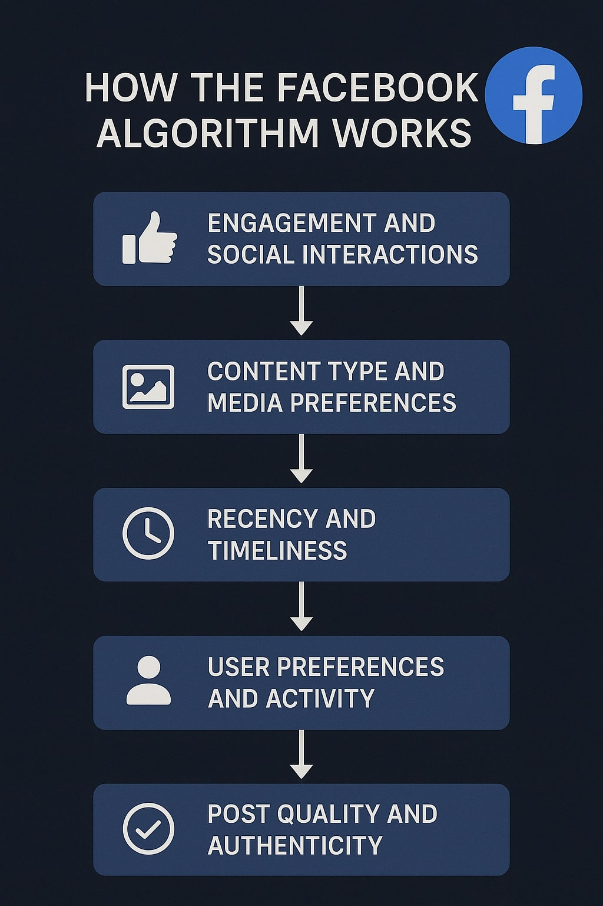
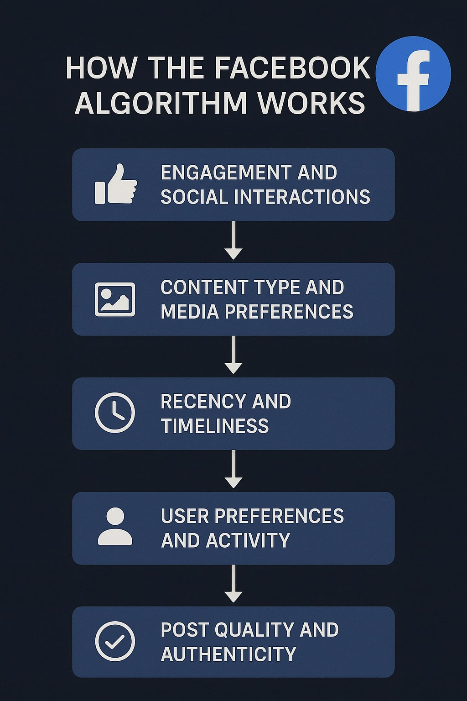

Background Information on Social Media
Social media emerged in the early 2000s as digital platforms designed to facilitate communication, content sharing, and community-building across the internet. Its roots can be traced to earlier forms of online interaction such as forums, chat rooms, and blogging sites, but it truly gained momentum with the launch of platforms like MySpace, Facebook, and Twitter. These sites revolutionised how people connected by allowing users to create personal profiles, share updates, and engage with others in real-time. Over time, social media expanded rapidly in both reach and functionality, incorporating multimedia sharing, live streaming, and algorithm-driven content curation. Today, platforms like Instagram, TikTok, and Snapchat have reshaped social dynamics, enabling users to instantly share their lives and interact with global audiences. While social media has enhanced communication and self-expression, it has also raised complex issues surrounding data privacy, digital identity, and the spread of misinformation, making it one of the most transformative and controversial developments in modern digital life. .
Privacy Before Social Media
Before the rise of social media and the internet, privacy was easier to maintain due to the difficulty in accessing personal information. Most private details existed in physical forms—like paper records—and were only accessible through direct means such as public directories or word of mouth. Individuals had greater control over what they shared, and unless they disclosed information themselves, their privacy remained largely intact. Common concerns were limited to basic details like home addresses or phone numbers, with more sensitive data such as bank account details stored offline. Privacy was further protected by slower communication methods, with personal information typically exchanged in private, face-to-face settings or over the phone. Without digital connectivity, smartphones, or online tracking, monitoring someone's routines or preferences was difficult. Daily life and personal interests were known only to close contacts, making it harder for strangers to intrude. Overall, privacy in the pre-digital era relied on individual control and physical boundaries. As long as sensitive details were kept private, there were few opportunities for outsiders to access or misuse personal information.

How Social Media Affects Privacy Today
Today, social media significantly impacts personal privacy by increasing the amount and accessibility of shared information. Unlike the past, where individuals controlled what they disclosed in limited social circles, modern platforms encourage constant sharing of personal updates, locations, preferences, and daily routines—often without considering the long-term consequences. Social media companies collect vast amounts of user data, including browsing behaviour, interactions, and demographic details, which are stored, analysed, and often shared with third parties for advertising and algorithmic targeting. Privacy settings can be complex and frequently change, making it difficult for users to manage who sees their content. Furthermore, information shared online can be copied, saved, and distributed without consent, increasing the risk of identity theft, cyberstalking, and data breaches. With the rise of facial recognition, geo-tagging, and personalised ads, users are constantly tracked in both digital and physical spaces. As a result, maintaining privacy in the age of social media requires far more awareness, vigilance, and digital literacy than ever before.

 
